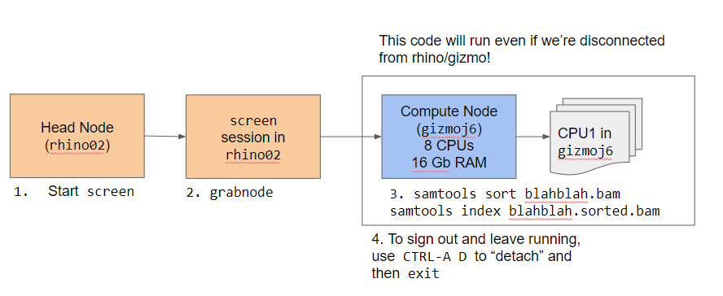
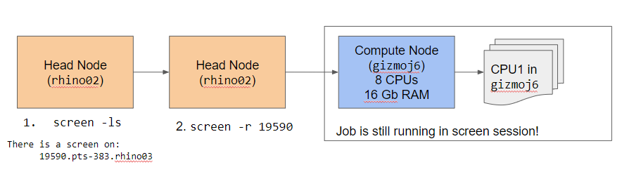

graph LR
A["Fast\n/fh/fast/my_lab/project/\nRaw Data & Scripts"] --"a. Sync Data & scripts"-->B
B["Temp\n/hpc/temp/my_lab/project\nb. Run Scripts here"] --"c. Sync results"-->A
9 Miscellaneous
9.1 hostname What Machine am I on?
One of the most confusing things about working on HPC is that sometimes you have a shell open on the head node, but oftentimes, you are on a worker node.
Your totem for telling which node you’re in is hostname, which will give you the host name of the machine you’re on.
For example, if I used grabnode to grab a gizmo node for interactive work, I can check which node I’m in by using:
hostnamegizmok164If you’re confused about which node you’re in, remember hostname. It will save you from making mistakes, especially when using utilities like screen.
9.1.1 Try it out
After logging into rhino, try running hostname. What host are you on?
9.2 Workflows
9.2.1 One Workflow: /fh/fast/ and /hpc/temp/
One approach is to have your scripts also live in your project folder in fast. Then, you can sync the project in /fh/fast/ over to /hpc/temp/, run the scripts in /hpc/temp/, and then sync the two folders again. You can do the file sync’ing in both directions with Motuz (?sec-motuz), which has its own advantages.
If you want to go this route, you should think about using a Folder Based Workflow (Section 8.6), where everything lives in a folder.
Another thing to consider is to have a backup of the scripts that is either on your own machine or in GitHub. You can do this by using your .gitignore to exclude the data and results.
9.2.2 Another Approach
Below is a a diagram with another way to work with these multiple filesystems.
- We transfer the raw files to be processed from
/fh/fast/to our directory/fh/temp/. For example, a set of.bamfiles. - We run our scripts from
/home/, on the raw files in/fh/temp/and produce results in/fh/temp/. - We transfer our results from
/fh/temp/to/fh/fast/.
graph TD
A["Home Directory\n/home/tladera2/\nScripts"] --"b. run scripts"--> C
B["Fast\n/fh/fast/tladera2\nResearch Data"] --"a. transfer raw files"--> C
C["Temp\n/hpc/temp/tladera2"] --"c. transfer results"--> B
9.3 Quoting and Escaping Filenames in Bash
One point of confusion is when do you quote things in Bash? When do you use single quotes (') versus double-quotes (")? When do you use \ to escape characters?
Let’s talk about some quoting rules in Bash. I’ve tried to make things as simplified and generalized as possible, rather than stating all of the rules for each quote.
- If you have spaces in a filename, use double quotes (
"chr 1.bam") - If you have a single quote in the filename, use double quotes to wrap it (
"ted's file.bam") - Only escape characters when necessary - if you can solve a problem with quotes, use them
- If you need to preserve an escaped character, use single quotes
Let’s go over each of these with an example.
9.3.1 If you have spaces in a filename, use double quotes (Most common)
For example, if your filename is chr 1 file.bam, then use double quotes in your argument
samtools view -c "chr 1 file.bam"9.3.2 If you have a single quote in the name, use double quotes to wrap it (less common)
Say you have a file called ted's new file.bam. This can be a problem when you are calling it, especially because of the single quote.
In this case, you can do this:
samtools view -c "ted's new file.bam"9.3.3 Only escape characters when necessary (less common)
There are a number of special characters (such as Tab, and Newline) that can be specified as escape characters. In double quotes, characters such as $ are signals to Bash to expand or evaluate code.
Say that someone had a $ in their file name such as Thi$file is money.bam
How do we refer to it? We can escape the character with a backslash \:
samtools view -c "Thi\$file is money.bam"The backslash is a clue to Bash that we don’t want variable expansion in this case. Without it, bash would look for a variable called $file.
9.3.4 If you need to preserve an escaped character, use single quotes (least common)
This is rarely used, but if you need to keep an escaped character in your filename, you can use single quotes. Say we have a filename called Thi\$file.bam and you need that backslash in the file name (btw, please don’t do this), you can use single quotes to preserve that backslash:
samtools view -c 'Thi\$file.bam'Again, hopefully you won’t need this.
9.3.5 For More Info
https://www.grymoire.com/Unix/Quote.html#uh-3
What about backticks?
Backticks (`) are an old way to do command evaluation in Bash. For example, if we run the following on the command-line:
echo "there are `ls -l | wc -l` files in this directory"Will produce:
there are 36 files in this directoryTheir use is deprecated, so you should be using $() in your command evaluations instead:
echo "there are $(ls -l | wc -l) files in this directory"
What about X use case?
There are a lot of rules for Bash variable expansion and quoting that I don’t cover here. I try to show you a way to do things that work in multiple situations on the cluster.
That’s why I focus on double quotes for filenames and ${} for variable expansion in general. They will work whether your Bash script is on the command line or in an App, or in WDL.
9.4 Using pipes: STDIN, STDOUT, STDERR
We will need to use pipes to chain our commands together. Specifically, we need to take a command that generates a list of files on the cluster shared filesystem, and then spawns individual jobs to process each file. For this reason, understanding a little bit more about how pipes (|) work in Bash is helpful.
If we want to understand how to chain our scripts together into a pipeline, it is helpful to know about the different streams that are available to the utilities.
graph LR A(STDIN) --> E[run_samtools.sh] E --> B(STDOUT) E --> C(STDERR)
Every script has three streams available to it: Standard In (STDIN), Standard Out (STDOUT), and Standard Error (STDERR) (Figure 9.1).
STDIN contains information that is directed to the input of a script (usually text output via STDOUT from another script).
Why do these matter? To work in a Unix pipeline, a script must be able to utilize STDIN, and generate STDOUT, and STDERR.
Specifically, in pipelines, STDOUT of a script (here it’s run_samtools) is directed into STDIN of another command (here wc, or word count)
graph LR
E[run_samtools.sh] --> B(STDOUT)
B --> F{"|"}
E --> C(STDERR)
F --> D("STDIN (wc)")
D --> G[wc]
run_samtools.sh into another command (wc)
We will mostly use STDOUT in our bash scripts, but STDERR can be really helpful in debugging what’s going wrong.
Why this is important on the Cluster
We’ll use pipes and pipelines not only in starting a bunch of jobs using batch scripting on our home computer, but also when we are processing files within a job.
9.4.1 For more info about pipes and pipelines
https://swcarpentry.github.io/shell-novice/04-pipefilter/index.html https://datascienceatthecommandline.com/2e/chapter-2-getting-started.html?q=stdin#combining-command-line-tools
9.5 basename can be very handy when on workers
If we are processing a bunch of files on a worker, we need a way to get the bare filename from a path. We will take advantage of this when we run process multiple files on the worker.
For example:
basename /mnt/project/worker_scripts/srun-script.shThis will return:
srun-script.shWhich can be really handy when we name our outputs. This command is so handy it is used in WDL.
9.6 Advanced Batch Processing: Iterating using xargs
A really common pattern is taking a delimited list of files and doing something with them. We can do some useful things such as seeing the first few lines of a set of files, or doing some sort of processing with the set of jobs.
Don’t
xargs for HPC jobs
You might be tempted to use xargs with srun to work on a bunch of files. It’s worth trying once so you can see the mechanics of how jobs are processed.
In general, I don’t recommend it in practice because if you spawn 1000 jobs using xargs, there’s no real mechanism to terminate that 1000 jobs, except one by one. With sbatch, all your jobs in batch mode run as subjobs, which means you can terminate the parent job to terminate all of the subjobs.
Again, this is a good reason to use a workflow runner in your day to day work. You don’t have to worry about jobs and subjobs. It takes a little setup, but it will make your life easier in general.
Let’s start out with a list of files:
source ~/.bashrc #| hide_line
ls data/*.shdata/batch-on-worker.shNow we have a list of files, let’s look at the first few lines of each of them, and print a separator --- for each.
#| filename: scripting-basics/xargs_example.sh
source ~/.bashrc #| hide_line
ls data/*.sh | xargs -I% sh -c 'head %; echo "\n---\n"'#!/bash/bin
cmd_to_run="ls *.vcf.gz | xargs -I% sh -c "bcftools stats % > %.stats.txt"
dx run swiss-army-knife \
-iin="data/chr1.vcf.gz" \
-iin="data/chr2.vcf.gz" \
-iin="data/chr3.vcf.gz" \
-icmd=${cmd_to_run}
---
dx find data --name "*.bam" --brief
---Let’s take this apart piece by piece.
xargs takes an -I argument that specifies a placeholder. In our case, we are using % as our placeholder in this statement.
We’re passing on each filename from ls into the following code:
sh -c 'head %; echo "---\n"'The sh -c opens a subshell so that we can execute our command for each of the files in our list. We’re using sh -c to run:
'head %; echo "---\n"'So for our first file, 01-scripting-basics.qmd, we are substituting that for % in our command:
'head hpc-basics.qmd; echo "---\n"'For our second file, hpc-basics.qmd, we would substitute that for the %:
'head hpc-basics.qmd; echo "---\n"'Until we cycle through all of the files in our list.
9.6.1 The Basic xargs pattern
graph LR
A["ls *.bam"] --> B{"|"}
B --> C["xargs -I% sh -c"]
C --> D["command_to_run %"]
xargs to iterate on a list of files
As you cycle through lists of files, keep in mind this basic pattern (Figure 9.3):
ls <wildcard> | xargs -I% sh -c "<command to run> %"
Test Yourself
How would we modify the below code to do the following?
- List only
.jsonfiles in ourdata/folder usingls - Use
tailinstead ofhead
ls *.txt | xargs -I% sh -c "head %; echo '---\n'"
Answer
ls data/*.json | xargs -I% sh -c "tail %; echo '---\n'"
Why this is important on HPC
We can use xargs to execute small batch jobs on a small number of files. This especially becomes powerful on the cluster when we use ls to list files in our HPC project.
Note that as we graduate to workflow tools like WDL/Nextflow, there are other mechanisms for running jobs on multiple files (such as WDL/Cromwell) that we should move to.
Trust me; you don’t want to have to handle iterating through a huge directory and handling when routines give an error, or your jobs get interrupted. Rerunning and resuming failed jobs are what workflow runner tools excel at.
9.6.2 For more information
9.7 screen or tmux: keep your session open
Oftentimes, when you are running something interactive on a system, you’ll have to leave your shell open. Otherwise, your running job will terminate.
You can use screen or tmux, which are known as window managers, to keep your sessions open on a remote machine. We’ll talk about screen.

screen works by starting a new bash shell. You can tell this because your bash prompt will change.
The key of working remotely with screen is that you can then request an hpc node.
For FH users, you can request a gizmo node using grabnode. We can then check we’re on the gizmo node by using hostname.
If we have something running on this node, we can keep it running by detaching the screen session. Once we are detached, we should check that we’re back in rhino by using hostname. Now we can log out and our job will keep running.

If we need to get back into that screen session, we can use:
screen -lsTo list the number of sessions:
There is a screen on:
37096.pts-321.rhino01 (05/10/2024 10:21:54 AM) (Detached)
1 Socket in /run/screen/S-tladera2.Once we’ve found the id for our screen session (in this case it’s 37096), we can reattach to the screen session using:
screen -r 37096And we’ll be back in our screen session! Handy, right?
For FH Users
Note that if you logout from rhino, you’ll need to log back into the same rhino node to access your screen session.
For example, if my screen session was on rhino01, I’d need to ssh back into rhino01, not rhino02 or rhino03. This means you will need to ssh into rhino01 specifically to get back into your screen session.
9.7.1 Using file manifests
One approach that I use a lot is using file manifests to process multiple sets of files. Each line of the file manifest will contain all of the related files I need to process.
For example, if I am aligning paired-end reads, then I can have a tab-separated column for the first strand, and a column for the second strand.
sample1_1.fq sample1_2.fq
sample2_1.fq sample2_2.fqThe one trick with using file manifests in bash is that we need to change the what’s called the internal field separator (IFS), which specifies how to split up a string with a for loop. By default, bash uses an IFS of ” ” (a space), which means that the for loop will cycle through words (strings separated by spaces), instead of lines.
We can change this behavior by setting the IFS at the beginning of our script:
OUTPUT_FOLDER="."
FASTA_INDEX_LOCATION="/shared/biodata/reference/iGenomes/Homo_sapiens/UCSC/hg19/Sequence/BWAIndex/genome.fa"
1for file in (cat manifest.txt)
2IFS=""
do
3 read1=$(echo $file | awk '{print $1}')
4 read2=$(echo $file | awk '{print $2}')
bwa mem ${FASTA_INDEX_LOCATION} ${read1} ${read2} > ${OUTPUT_FOLDER}/${read1}.sam
done
5unset IFS- 1
-
Cycle through each line in
manifest.txt - 2
-
Change IFS to be
""(no space), to process a file line by line. - 3
-
Grab the word in the 1st position and assign it to
$read1 - 4
-
Grab the word in the 2nd position and assign it to
$read2 - 5
- Reset IFS to original behavior.
The line:
read1=$(echo $file | awk '{print $1}') Takes some unpacking. The first thing to notice is that we’re assigning something into the $read1 variable.
This part:
$(echo $file | awk '{print $1}')puts $file through a command called awk that lets us extract words of a string by position. In our case, our different parts of the string are separated by tabs.
The $( ) part lets us run a subshell and then return the value of the output.
This part:
'{print $1}'Are instructions to awk to output the first word of our string. awk is an extremely powerful command, but we don’t have enough time to cover it in full.
So, when we put it together, the command assigns $read1 the value of the first position (sample1_1.fq), letting us do things with it.
We’ll see that you can also use file manifests with workflow runners such as Cromwell.